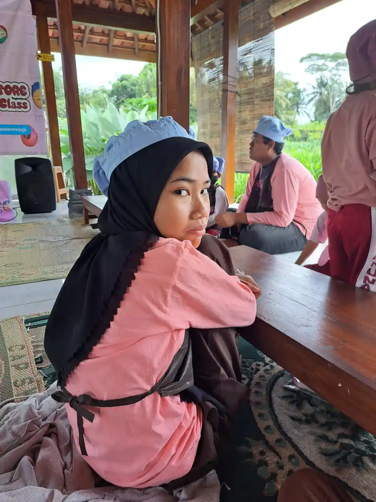

Kesehatan mental remaja berkebutuhan khusus perlu dirawat bersama kesehatan fisik, kemampuan komunikasi, pendidikan, dan relasi sosialnya. Remaja dengan autisme, ADHD, disabilitas intelektual, hambatan fisik, hambatan sensorik, atau kebutuhan perkembangan lain tetap mengalami perubahan emosi dan sosial pada masa pubertas. Perbedaan cara berkomunikasi atau belajar tidak berarti mereka kebal dari cemas, sedih, stres, atau kesepian.
WHO menjelaskan bahwa remaja dengan autisme, disabilitas intelektual, atau kondisi neurologis lain dapat lebih berisiko mengalami masalah kesehatan mental karena stigma, diskriminasi, pengucilan, dan akses dukungan yang belum memadai. Karena itu, keluarga tidak cukup hanya menilai apakah anak patuh atau berprestasi. Yang perlu dilihat adalah perubahan pada kesejahteraan, rasa aman, hubungan, dan kesempatan anak untuk berpartisipasi.
Artikel ini membantu orang tua, guru, dan pendamping mengenali sinyal awal serta menyusun respons yang hangat. Informasi ini bersifat edukasi. Diagnosis tetap perlu dilakukan oleh tenaga profesional yang memahami perkembangan anak dan konteks kebutuhannya.
Daftar Isi
Apa yang Dimaksud Kesehatan Mental Remaja Berkebutuhan Khusus?
Kesehatan mental bukan sekadar tidak memiliki gangguan psikologis. Kesehatan mental juga mencakup kemampuan merasa aman, mengenali emosi, membangun hubungan, menghadapi perubahan, belajar, beristirahat, dan meminta pertolongan. Pada remaja berkebutuhan khusus, kemampuan tersebut mungkin ditunjukkan dengan cara yang berbeda. Anak dapat menyampaikan nyaman melalui gestur, pilihan gambar, ekspresi wajah, perilaku, atau perubahan rutinitas.
Jangan menyamakan perilaku disabilitas dengan masalah mental. Misalnya, gerakan berulang dapat menjadi cara regulasi sensorik, sedangkan ledakan emosi dapat dipicu oleh nyeri, kurang tidur, tuntutan komunikasi, atau lingkungan yang terlalu bising. Namun, perubahan yang baru muncul, lebih sering, atau makin mengganggu tetap perlu diselidiki. Pendekatan yang baik mencari penyebab, bukan memberi label buruk pada anak.
Tujuan dukungan kesehatan mental adalah membantu remaja berpartisipasi dan merasa dihargai. Targetnya dapat berupa tidur lebih teratur, mampu mengungkapkan kebutuhan, kembali menikmati aktivitas, berani masuk kelas, atau memiliki strategi ketika cemas. Kemajuan tidak harus diukur dengan standar anak lain.
Tantangan yang Sering Dihadapi
Masa remaja membawa perubahan tubuh, tuntutan sosial, dan pertanyaan tentang identitas. Remaja berkebutuhan khusus mungkin menghadapi lapisan tantangan tambahan, seperti penjelasan sosial yang sulit dipahami, komunikasi yang belum lancar, pengalaman diejek, atau ketergantungan pada orang dewasa dalam aktivitas harian.
- Perubahan pubertas: perubahan tubuh dan emosi dapat membingungkan jika tidak dijelaskan dengan bahasa yang konkret, gambar, jadwal visual, dan latihan privasi.
- Stigma dan bullying: komentar merendahkan atau pengucilan bisa membuat anak menarik diri dan kehilangan kepercayaan diri.
- Beban sensorik: suara, cahaya, keramaian, pakaian, atau sentuhan tertentu dapat membuat anak cepat lelah dan sulit pulih.
- Hambatan komunikasi: anak bisa mengetahui bahwa dirinya tertekan tetapi tidak memiliki cara yang mudah untuk menjelaskannya.
- Transisi sekolah dan masa depan: tuntutan akademik, pertemanan, keterampilan mandiri, dan rencana setelah sekolah perlu dipersiapkan bertahap.
Karena tantangan tersebut saling terkait, dukungan tidak boleh dibebankan hanya kepada ibu atau guru pendamping. Keluarga, sekolah, tenaga kesehatan, dan lingkungan perlu berbagi informasi dengan tetap menjaga privasi anak.

Tanda yang Perlu Diperhatikan
Perhatikan pola selama beberapa minggu, bukan hanya satu hari yang sulit. Bandingkan dengan kebiasaan anak sendiri, bukan dengan standar remaja lain. Catat kapan perubahan terjadi, siapa yang ada di sekitar anak, kegiatan sebelumnya, kualitas tidur, dan apa yang membantu.
- Perubahan tidur, nafsu makan, energi, atau keluhan fisik tanpa penjelasan yang jelas.
- Minat pada kegiatan yang biasanya disukai menurun, atau anak lebih sering mengisolasi diri.
- Kemarahan, tangisan, kecemasan, atau ledakan perilaku meningkat dengan pemicu yang tidak mudah dipahami.
- Penolakan sekolah, ketakutan pada tempat tertentu, atau perubahan interaksi dengan teman dan keluarga.
- Ucapan, gambar, gestur, atau pencarian informasi tentang kematian, menyakiti diri, atau keinginan untuk menghilang.
Tanda tersebut tidak langsung membuktikan depresi atau gangguan kecemasan. Anak mungkin sedang mengalami sakit gigi, gangguan tidur, efek obat, masalah pendengaran, menstruasi yang menyakitkan, atau perubahan lingkungan. Pemeriksaan menyeluruh membantu membedakan faktor medis, sensorik, perkembangan, dan psikologis.
Dukungan Praktis di Rumah
Mulailah dari hubungan yang aman. Sediakan waktu singkat tetapi rutin untuk terhubung tanpa tuntutan akademik. Duduk di dekat anak, ikuti minatnya, dan berikan pilihan sederhana seperti ingin berbicara, menggambar, berjalan, atau duduk tenang. Respons yang konsisten membuat anak belajar bahwa menyampaikan kesulitan tidak akan langsung dihukum.
Gunakan sistem komunikasi yang paling efektif bagi anak. Kartu emosi, skala warna, kalender visual, papan pilihan, bahasa isyarat, atau aplikasi komunikasi dapat membantu. Ajarkan beberapa pesan fungsional, misalnya “terlalu ramai”, “saya butuh istirahat”, “saya takut”, dan “tolong”. Orang dewasa perlu menghormati pesan itu dan menindaklanjutinya.
Atur rutinitas tidur, makan, aktivitas fisik, waktu layar, dan jeda sensorik secara realistis. Jangan menjadikan semua kegiatan sebagai terapi. Remaja juga perlu bermain, beristirahat, memiliki privasi, dan menikmati hobi. Fokus pada kekuatan anak, sesuai saran UNICEF, agar dukungan tidak hanya berisi koreksi terhadap kekurangan.
Peran Sekolah dan Lingkungan
Sekolah inklusi perlu memiliki jalur komunikasi yang jelas antara wali kelas, guru pendamping, keluarga, dan anak. Rencana pembelajaran individual dapat memuat tujuan akademik, keterampilan sosial, cara komunikasi, pemicu stres, strategi menenangkan diri, dan prosedur keselamatan. Dokumen tersebut perlu ditinjau ketika kebutuhan anak berubah.
Lingkungan yang mendukung tidak berarti menurunkan harapan. Guru dapat memecah tugas menjadi langkah kecil, memberi pilihan cara menjawab, menyiapkan ruang tenang, menjelaskan aturan secara konkret, dan memberi waktu transisi. Teman sekelas dapat diajarkan tentang empati dan batas pribadi tanpa membuka informasi anak secara berlebihan.
Bullying harus ditangani sebagai masalah keamanan dan budaya sekolah, bukan sebagai kelemahan anak. Tanyakan kepada remaja bentuk bantuan yang ia inginkan. Bagi sebagian anak, pendampingan saat istirahat membantu. Bagi yang lain, dukungan terbaik adalah satu teman tepercaya dan akses cepat ke guru.
Kapan Perlu Mencari Bantuan Profesional?
Hubungi dokter, psikolog, psikiater anak, atau tenaga kesehatan yang relevan bila perubahan berlangsung, mengganggu kehidupan sehari-hari, atau membuat anak kehilangan rasa aman. Bawa catatan pola perilaku, daftar obat, laporan sekolah, riwayat tidur, dan contoh komunikasi anak. Informasi konkret membuat asesmen lebih bermakna.
Jika anak menyampaikan ingin mati, menyakiti diri, atau tidak ingin hidup, anggap serius. Jangan meninggalkan anak sendirian, jauhkan benda yang dapat digunakan untuk melukai diri, dan cari pertolongan darurat setempat. Dengarkan dengan tenang, jangan berdebat, dan jangan menjanjikan kerahasiaan mutlak ketika keselamatan sedang terancam.
Dukungan Inklusif Bersama YUKA
YUKA memandang anak berkebutuhan khusus sebagai pribadi yang memiliki kekuatan, kebutuhan, dan hak untuk belajar. Pendekatan pendidikan inklusi perlu berjalan bersama komunikasi keluarga, dukungan guru, dan kesempatan anak berpartisipasi. Orang tua dapat mempelajari pengertian ABK, memahami prinsip pendidikan inklusi, serta menyusun tujuan bersama melalui program pembelajaran individual.
Dukungan tambahan dapat disesuaikan dengan kebutuhan, misalnya terapi okupasi, terapi wicara, terapi bermain, atau kegiatan yang melatih kemandirian. Baca juga panduan peran orang tua dalam pendidikan inklusi, self-care untuk orang tua, sensori integrasi, dan stimulasi motorik halus sebagai bahan diskusi bersama tenaga profesional.
FAQ Kesehatan Mental Remaja Berkebutuhan Khusus
Apakah remaja berkebutuhan khusus bisa mengalami masalah kesehatan mental?
Bisa. Remaja berkebutuhan khusus dapat mengalami kecemasan, depresi, stres, kesepian, atau masalah perilaku. Hambatan komunikasi, stigma, bullying, perubahan pubertas, dan akses dukungan yang terbatas dapat meningkatkan beban. Tanda yang menetap perlu dibicarakan dengan tenaga kesehatan.
Apa tanda kesehatan mental remaja ABK sedang terganggu?
Perubahan yang menetap pada tidur, nafsu makan, emosi, minat, interaksi, komunikasi, atau perilaku dapat menjadi tanda. Perhatikan juga keluhan fisik berulang, penolakan sekolah, menyakiti diri, atau ucapan ingin menghilang. Satu tanda tidak otomatis berarti diagnosis, tetapi layak dicermati.
Bagaimana cara berbicara dengan remaja ABK tentang perasaannya?
Gunakan kalimat singkat, waktu yang tenang, dan media komunikasi yang paling dikuasai anak. Tanyakan satu hal dalam satu waktu, beri jeda untuk menjawab, dan terima jawaban tanpa menghakimi. Bila anak memakai gambar, gestur, atau alat komunikasi alternatif, gunakan media tersebut.
Apa yang harus dilakukan jika remaja mengalami bullying?
Dengarkan cerita anak, catat kejadian, simpan bukti, lalu sampaikan kepada wali kelas atau pihak sekolah. Buat rencana keselamatan dan titik kontak yang jelas. Jangan meminta anak membalas atau menyalahkan dirinya. Jika ada ancaman fisik atau risiko menyakiti diri, cari bantuan segera.
Kapan orang tua perlu menghubungi psikolog atau psikiater?
Hubungi tenaga profesional bila perubahan emosi atau perilaku berlangsung, mengganggu sekolah dan aktivitas harian, atau membuat anak tidak aman. Rujukan juga penting bila muncul pembicaraan tentang kematian, menyakiti diri, agresi berat, atau penarikan diri yang tajam.
Apakah dukungan kesehatan mental harus menunggu anak bisa berbicara lancar?
Tidak. Asesmen dapat memakai observasi, wawancara pengasuh, komunikasi alternatif, dan informasi dari sekolah. Anak tetap perlu dilibatkan sesuai kemampuan komunikasinya agar dukungan menghormati pilihan dan pengalamannya.
Sumber Rujukan
Rujukan berikut membantu keluarga memahami kesehatan mental remaja, pengasuhan anak disabilitas, dan pentingnya lingkungan yang suportif:
Catatan: artikel ini tidak menggantikan diagnosis, obat, atau terapi dari tenaga kesehatan.
Catatan praktis untuk pendamping
Pendamping tidak harus langsung memiliki semua jawaban. Yang lebih penting adalah membuat anak merasa aman untuk bercerita dan mengetahui bahwa permintaannya didengar. Jika anak sulit menjelaskan perasaan dengan kata-kata, gunakan pilihan sederhana seperti kartu emosi, gambar tubuh, skala angka, atau pertanyaan tertutup. Catat pemicu, situasi, respons, dan hal yang membantu selama beberapa hari. Catatan ini memudahkan orang tua dan profesional melihat pola tanpa menyalahkan anak.
Jaga pula ruang untuk kesenangan. Remaja berkebutuhan khusus tetap membutuhkan hobi, teman, waktu istirahat, dan kesempatan mengambil keputusan. Aktivitas yang disukai dapat menjadi pintu masuk untuk membangun kepercayaan diri. Orang tua dapat memulai dari pilihan kecil, misalnya memilih pakaian, menentukan urutan kegiatan, atau memilih cara menyampaikan kebutuhan. Kemandirian tumbuh melalui latihan yang konsisten, bukan melalui tuntutan mendadak.
Terakhir, buat rencana komunikasi saat kondisi memburuk. Tuliskan siapa yang dihubungi, ruang aman yang tersedia, tanda bahaya yang perlu diperhatikan, dan langkah untuk menjauhkan benda berisiko. Rencana tersebut sebaiknya dibahas bersama anggota keluarga dan sekolah yang relevan. Bila ada ancaman melukai diri, kekerasan, kebingungan berat, atau bahaya langsung, cari bantuan darurat setempat dan jangan meninggalkan anak sendirian.